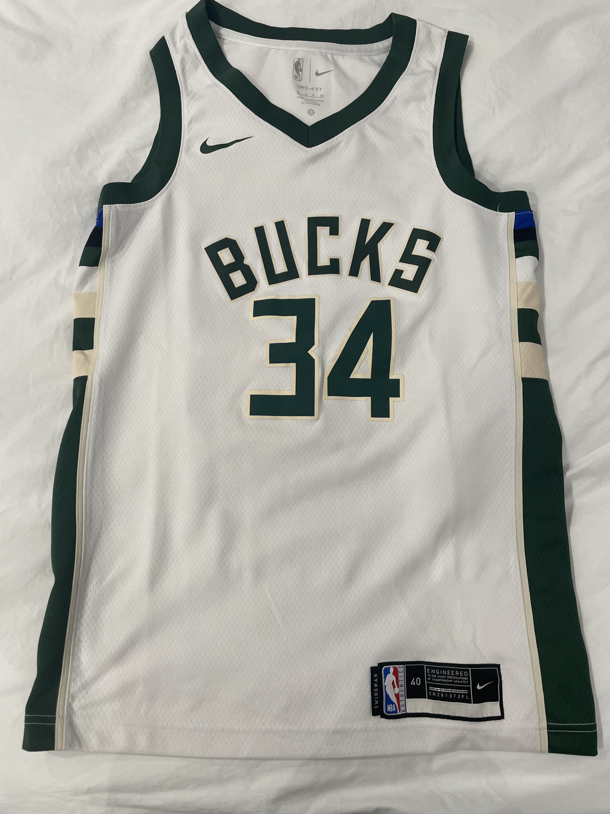
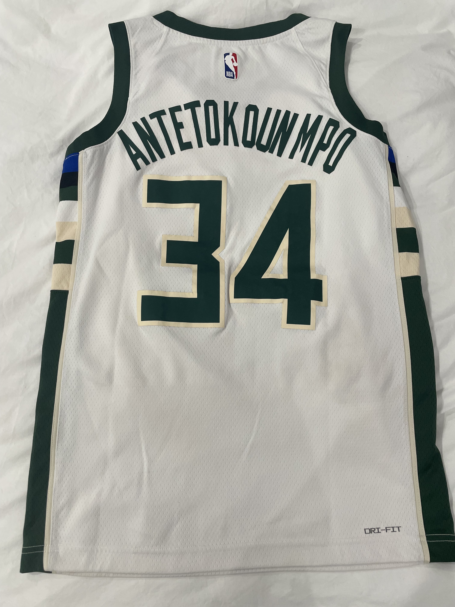

| MI JUGADOR FAVORITO: GIANNIS ANTETOKOUNMPO |
 |
| Giannis
Antetokounmpo es, sin duda, mi jugador favorito. Su historia es
increíble, desde su infancia en Grecia hasta convertirse en una
estrella de la NBA. Su habilidad para jugar en múltiples posiciones,
junto con su increíble envergadura y velocidad, lo hacen único. Es
conocido por su increíble capacidad de salto y su estilo de juego
agresivo tanto en ataque como en defensa. Además, su forma trabajo y
humildad fuera de la cancha lo convierten en un verdadero modelo a
seguir. Ganar el MVP y el título con los Milwaukee Bucks demuestra lo
que es capaz de lograr cuando está en su mejor nivel. |
 |